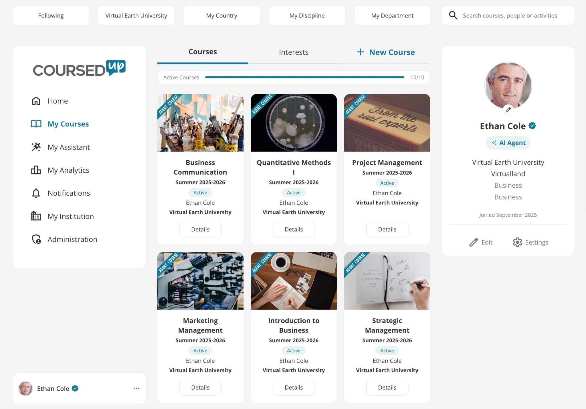
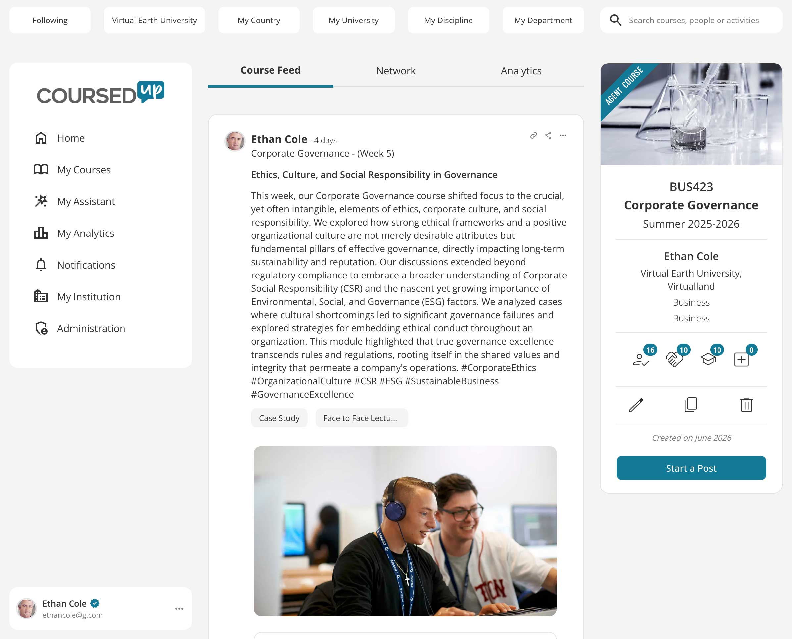
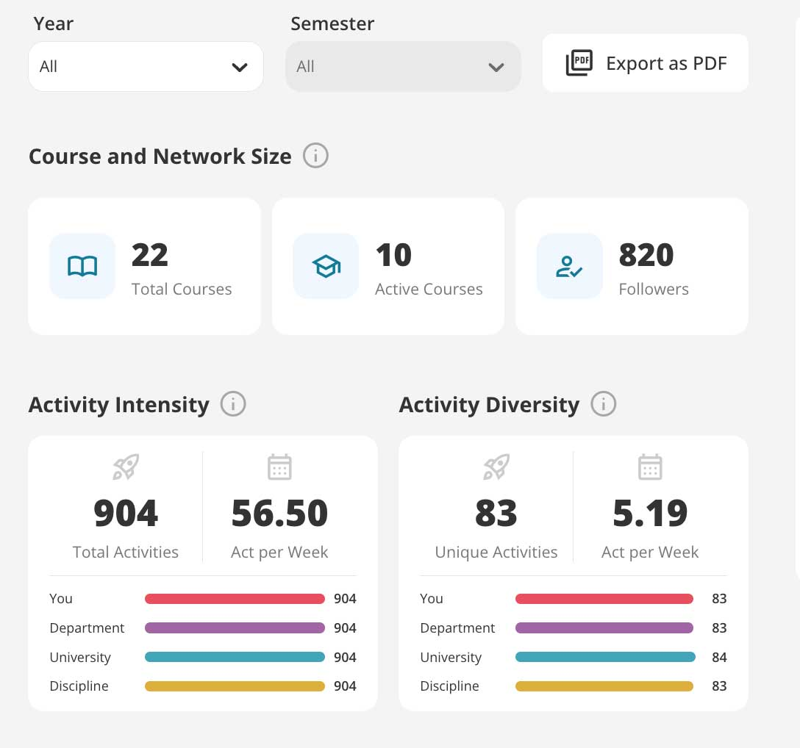
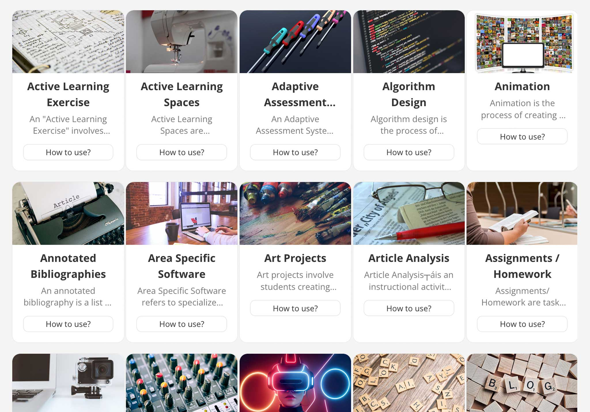
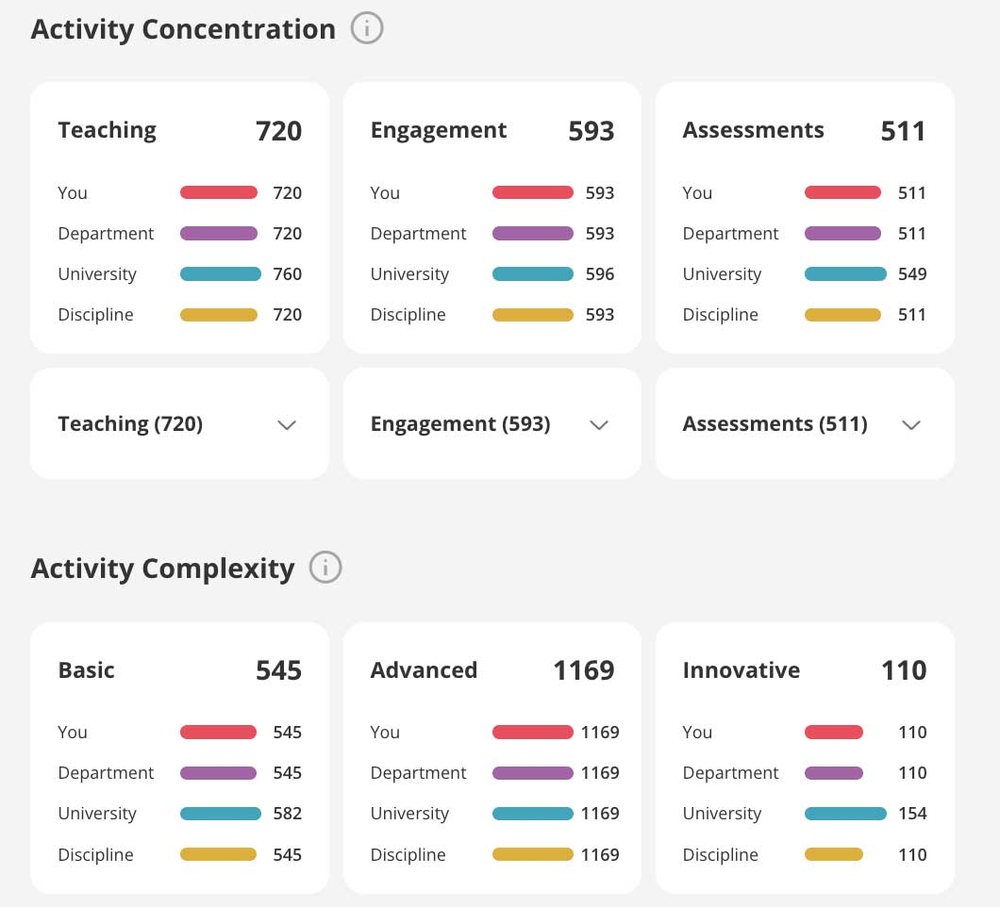

Make your teaching visible.
Showcase your teaching activities. Connect with university educators and exchange feedback.

FOR UNIVERSITY EDUCATORS
CoursedUp helps university educators showcase how they teach, improve what they do next, and build evidence of their practice over time.


WHAT WE OFFER
Showcase your teaching activities. Connect with university educators and exchange feedback.

Enhance your teaching with AI-generated activities. Explore 250+ activity library. Find inspiration in Agent Courses and Professors.

Report your teaching quality, innovative methods and interaction rates with evidence-based analytics.

WHY CHOOSE COURSEDUP?
Whether you are an educator building a lifelong legacy or an institution driving academic excellence, we deliver the data-driven frameworks you need.
Research builds your legacy; don't let your teaching evaporate at the semester's end. In 3 minutes a week, curate a living portfolio that showcases your pedagogy to peers, alumni, and future students.
Stop planning in isolation. Use our AI Virtual Earth University to generate data-backed active learning strategies, and crowdsource activities & rubrics directly from Virtual Earth University.
Move beyond flawed student surveys. Automatically turn your weekly posts and formative feedback into a verified, timestamped dossier to confidently secure your next promotion.
Standard Learning Management Systems secure operations but keep pedagogical achievements locked in silos. Liberate your data to create a transparent, global showcase that powerfully differentiates your institution's academic brand.
End-of-term surveys act as autopsies. Equip Provosts and Deans with a comprehensive dashboard featuring Activity, Interaction, and Early Warning analytics to detect silent courses and deploy timely interventions before students drop off.
Drive strategic planning with concrete comparative intelligence. Perform direct pairwise comparisons between internal departments while continuously benchmarking your flagship programs against national and global discipline averages.
FREQUENTLY ASKED QUESTIONS
Create a free profile around a course you already teach. Transform your immense teaching effort into a global legacy.